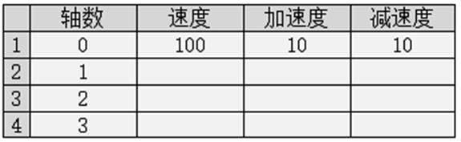
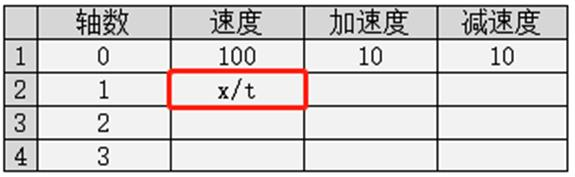

|
类型 |
报表视图元件操作指令 | ||||||||||||
|
描述 |
设置/获取表格指定内容（字符串） 表格项指定为字符串类型时调用该指令设置获取数据。 | ||||||||||||
|
语法 |
HMI_TABLETEXT (winid, controlid, row, col, "string") string = HMI_TABLETEXT (winid, controlid, row, col) winid：HMI文件里面窗口编号 controlid：元件编号 row：表格指定行，-1表示选中所有行 col：表格指定列，-1表示选中所有列 string：表格指定项内容（字符串） 多选时，使用表格分隔符","分割多个字符串，使用换行符"CHR(10) "给字符串换行。 如：HMI_TABLETEXT(10,1,-1,-1,"aaa, bbb, ccc + CHR(10) + ddd, eee, fff, ggg, hhh, iii")表示选中10号窗口第一个元件的所有行和列，为其设置数据如下：两行9个单元格数据，第一行3个数据，第二行6个数据，如下表格所示。
注：指令只会操作选中部分。行号、列号从0开始编码（表头行/列不计入行/列号）！ | ||||||||||||
|
适用控制器 |
支持RTHmi | ||||||||||||
|
例子 |
HMI_TABLETEXT(16, 1, 1, 1, "x/t") ’将16号窗口第1个元件的第2行2列单元格的内容设置为x/t 运行效果如下： Ø 在“在线命令”中输入该指令，表格中第2行2列单元格的内容被设为x/t   |